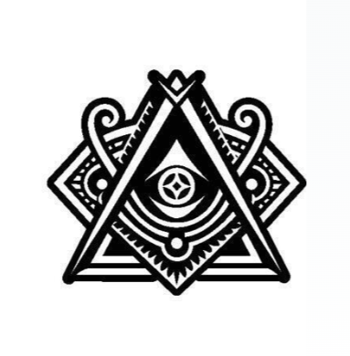

Aclarando Dudas
Descubrir

No. La Masonería ha combatido siempre toda forma de intolerancia, provenga de donde provenga, y continuará haciéndolo. Rechaza las actitudes o posiciones de cualquier religión, secta, partido, ideología o grupo que se sustente en la intolerancia o la fomente. Sin embargo, no es anticlerical.
No. La Masonería es laica. Su práctica se basa en la libertad absoluta de conciencia y deja las creencias en el ámbito personal de cada individuo.
Si bien la Biblia, entre otros libros simbólicos, preside muchos templos masónicos, su presencia apunta a la sabiduría que encierra como texto fundamental de la cultura humana, más que a su contenido religioso. La Masonería acepta y respeta las creencias, pero en sí misma no adopta ninguna creencia como propia.
La Masonería no declara ser un camino único y cerrado, más bien sería un laberinto. Existen múltiples respuestas para cada pregunta, y esas respuestas solo pueden ser halladas por quien se las formula.
En Masonería no existen gurúes, sumos sacerdotes, ni administradores de una verdad absoluta. La Masonería defiende la libertad de búsqueda.
La Masonería elige a sus miembros. No acepta fanáticos, integristas, racistas, xenófobos ni intolerantes de ninguna clase.
En su criterio de selección, que es efectivamente estricto, no se consideran el poder económico ni el prestigio social del aspirante, sino su coincidencia con los valores éticos y humanísticos que la Masonería defiende y sostiene.
Lo es, en el sentido más amplio del término. Es esotérico cualquier conocimiento reservado a quienes han sido iniciados en su comprensión. Un mapa es esotérico para quien no conoce geografía; una ecuación lo es para quien no sabe matemáticas. La Masonería es un método de búsqueda de la verdad al que acceden los iniciados a través de su práctica.
Lo es. Para ingresar en cualquier academia o universidad se deben demostrar ciertas capacidades y manifestar la voluntad de seguir un camino de formación. De igual modo, para ingresar en la Masonería se deben demostrar las cualidades consideradas necesarias para iniciar una vía continua de perfeccionamiento de la calidad humana.
No. Aunque la historia registra una extensa lista de personas destacadas (políticos, científicos, filósofos) que fueron masones, la Orden no resalta sus nombres por su poder o posición, sino por su contribución al progreso de la humanidad.
Lo es. Un ritual es una ceremonia, como lo es una jura a la bandera así como lo es una celebración religiosa. Los rituales masónicos, basados en el método simbólico e iniciático, constituyen un proceso de autoesclarecimiento y aprendizaje interior. Son el resultado de un largo proceso histórico de selección mientras conservan un delicado equilibrio entre gestos, palabras y significados.
La Orden toma herramientas de la construcción (como la escuadra y el compás) para convertirlas en un lenguaje universal. Este método simbólico permite que personas de diferentes culturas y lenguas se unan en una cadena fraternal. Aunque nuestros símbolos tienen significados precisos, no tienen una interpretación única y cerrada. Cada masón es animado a descubrir y resignificar estos símbolos en su propio proceso interior de autoconocimiento y autoesclarecimiento.
Todo lo contrario. La idea de perfeccionamiento individual pasa necesariamente por una mejor comprensión del mundo y su entorno. No buscamos la mejora personal por vanidad, sino para agudizar el intelecto y la empatía. Solo quien se comprende a sí mismo y entiende su contexto está verdaderamente capacitado para transformar la sociedad.
Quien se acerque con esa intención se ha equivocado de puerta. En la Masonería se practica la solidaridad, no el interés.
No. Todos los cargos, incluso los más altos, son elegidos mediante sufragio universal y pueden ser renovados o no tantas veces como el colectivo lo decida.
Aunque aún existen Grandes Logias u Orientes exclusivamente masculinos, en la Masonería laica es esencial la aportación de la mujer como Maestra de su propia arquitectura interior, con el mismo rango que el hombre.
La Masonería liberal, desde finales del siglo XIX, admite miembros femeninos de pleno derecho.